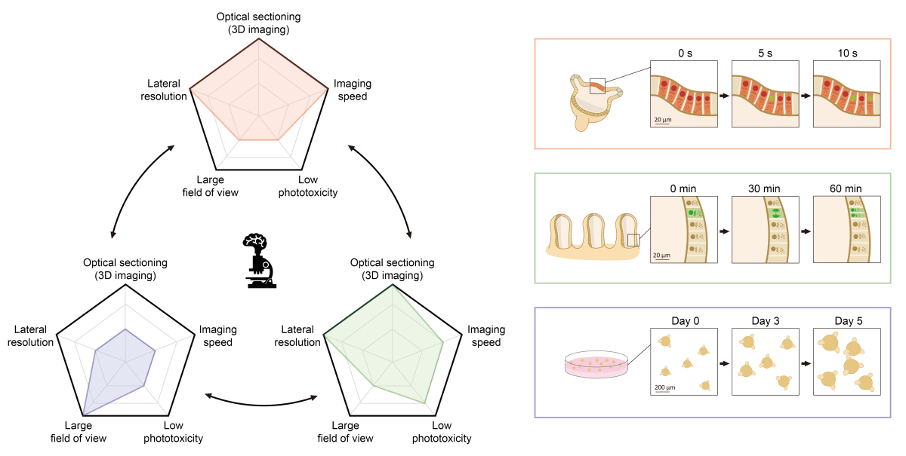

Imaging 3D cell cultures with optical microscopy
A new review article published in Nature Methods surveys the application of optical microscopy techniques for 3D cell culture research. Led by Huai-Ching Hsieh (University of Washington), the review provides a general guide for selecting optimal microscopy methods based on specific research goals, while also highlighting technical innovations that may address common challenges.
Since 3D cell cultures are more physiologically relevant than traditional 2D monolayers, they have become increasingly important for biomedical research. However, their added complexity, such as multi-layered and scaffold-based architectures, presents unique challenges for optical imaging. As dictated by specific biological end goals, a careful balancing of parameters is required, including spatial resolution, contrast, imaging depth, and compatibility with living samples (e.g., phototoxicity).
The review starts by outlining common optical microscopy approaches used for imaging advanced cell cultures, followed by a survey of major research areas where 3D cell cultures are commonly applied: developmental biology, infection biology, pharmacology, and cancer biology. These research areas provide real-world examples that allow the authors to comment on key technical factors to consider when selecting or optimizing microscopy methods.
Motivated by many of the imaging challenges identified earlier in the review, the authors provide a forward-looking discussion towards the end of the article on emerging areas of technical importance and development. For instance, adaptive optics and scattering mitigation techniques are being developed to improve image resolution and contrast deep within 3D cell cultures. Multiscale imaging workflows are also highlighted for time- and data-efficient interrogation of large 3D samples at high resolution. These workflows often combine both hardware and software innovations in a “smart” microscopy image-feedback paradigm. Multiplexed imaging is also featured as an important step towards understanding complex cellular compositions and interactions in 3D cell cultures. Emerging strategies include real-time unmixing of hyperspectral imaging datasets, which can potentially be used for feedback-based control.
Finally, the authors point to future possibilities in “computationally enhanced microscopy”. Examples include event-driven imaging with adaptive frame rates to capture cellular events that occur at sparse time points, such as cell division. Such approaches may be particularly powerful in the context of studying 3D cell cultures, where increasing levels of structural complexity necessitate smarter control of imaging parameters and data outputs to ensure efficient and impactful biological readouts.